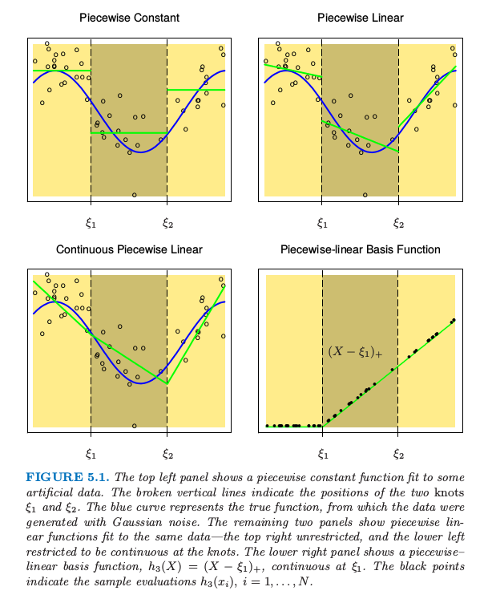
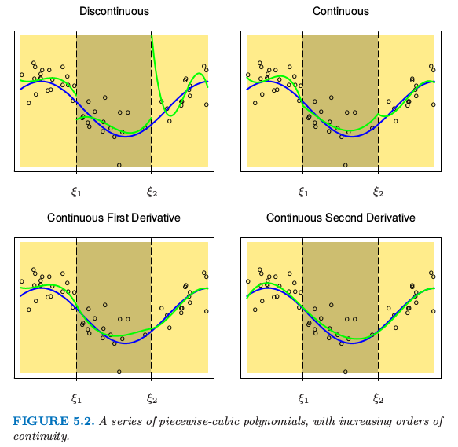
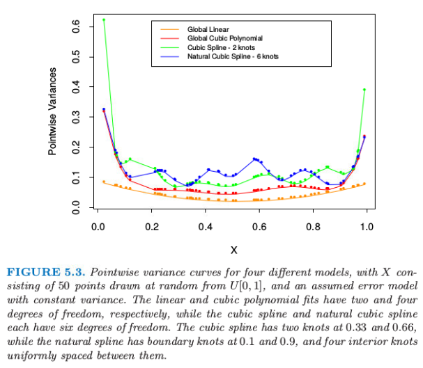
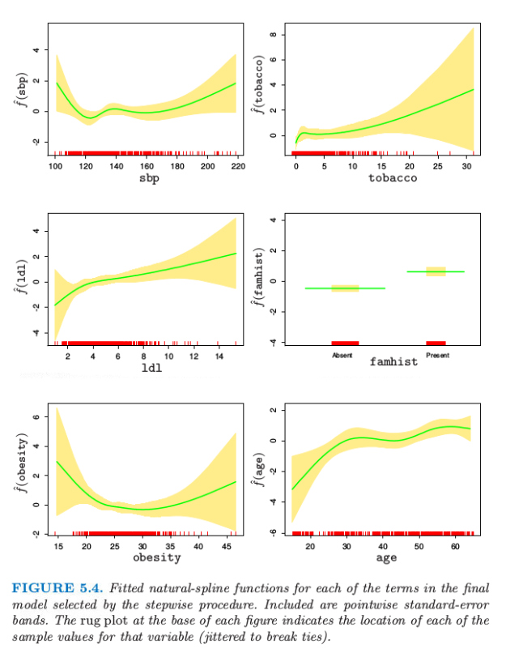
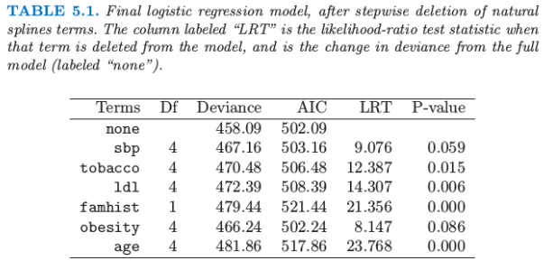
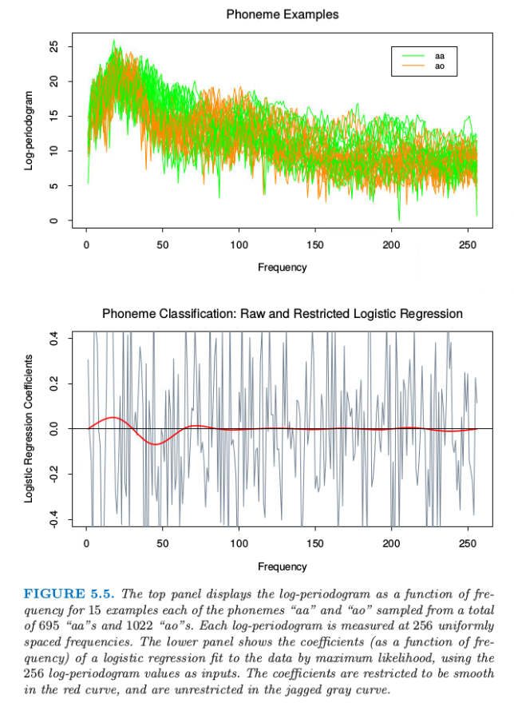

5.2 分段多项式和样条
Contents
5.2 分段多项式和样条¶
本章直到 第 5.7 节 ，我们都假设 \(X\) 为一维向量（ 即标量 ）。
分段多项式函数 \(f(X)\) 通过将输入变量 \(X\) 的定义域划分成若干连续区间而得到，在每个区间内分别使用各自的多项式来表示 \(f\) 。图 5.1 显示了几个简单的分段多项式。
第一个多项式（ 左上图 ）采用了分段的常数拟合，含有三个单位值的基函数：
因为三个函数在不连续的区域上均为正的常数值，所以模型 \(f(X)=\sum_{m=1}^3\beta_mh_m(X)\) 的最小二乘估计为 \(\hat\beta_m=\overline{Y}_m\)，即基函数系数 \(\beta\) 的估计值为 \(Y\) 在第 \(m\) 个区间上的均值。

图 5.1. 上面两张图显示了对一些模拟数据的分段常值函数拟合。垂直虚线表示两个连接点 \(\xi_1\) 和 \(\xi_2\)。蓝色曲线表示真正的函数，数据是通过函数加上高斯噪声产生的。下面板的图显示了对同样数据的分段线性函数拟合——上面板的图没有限制，而下面板的图限制为在连接点处连续——右上图没有限制，而左下图限制为在连接点处连续。右下图显示了分段线性的基函数，\(h_3(X)=(X-\xi_1)_+\), 它在 \(\xi_1\) 处连续。黑色点表示样本取值 \(h_3(x_i),i=1,2,\ldots,N\)。
第二个多项式（ 右上图 ）显示了分段的线性拟合。需要三个额外的基函数：\(h_{m+3}=h_m(X) \ X \ ,m=1,2,3\) 。
第三个多项式（ 左下图 ）通常是我们更想要的，它也是分段线性的，但与前两者的不同之处在于，基函数在间隔点上是连续的。连续性的约束导致分段多项式在模型参数上，可能存在某种线性约束。例如，\(f(\xi_1^-)=f(\xi_1^+)\) 意味着 \(\beta_1+\xi_1\beta_4=\beta_2+\xi_1\beta_5\)。在此情形下，由于存在两个约束，我们可以减少两个参数，最终使用 \(4\) 个自由参数。
这种情形下更直接的方式是将约束与基函数结合起来：
其中 \(t_+\) 表示为正的部分。函数 \(h_3\) 如图 5.1 右下角所示。
通常我们更加偏好比较平滑的曲线函数，这可以通过增加局部多项式的阶数实现。

图 5.2. 一系列分段 \(3\) 次多项式拟合，其中增加了在连接点处连续性的阶数。
图 5.2 展示了一系列对同样数据进行的分段 \(3\) 次多项式拟合，依次增加了连接点处连续性的阶数。右下图的函数是连续的，且在连接点处的一阶和二阶微分均连续，通常被称为三次样条。在此基础上，如果再增加一阶的连续性，就可以得到全局三次多项式。不难证明（练习 5.1），下面的基函数表示了一个连接点为 \(\xi_1\) 和 \(\xi_2\) 的三次样条。
这 \(6\) 个基函数对应于一个六维函数的线性空间。可以很快地确定该模型对应的参数数量为：（ \(3\) 个区域）\(\times\) ( 每个区域 \(4\) 个参数 ) -（ \(2\) 个连接点 ）\(\times\)（ 每个连接点 \(3\) 个约束 ） \(= 6\) 。
注解：
单独考虑每个区域，由于均为三阶多项式，因此每个区域需要确定四个参数； 在每个连接点处，为保持函数连续、一阶微分连续、二阶微分连续，需要 \(3\) 个约束 ，每增加一个约束减少一个参数；因此，总参数数量为 \( (3 \times 4) - ( 2 \times 3) = 12 - 6 = 6\)。
更一般性地，具有连接点 \(\xi_j \ ,\ \{ j=1,\ldots,K \}\) 的 \(M\) 阶样条，是一个阶数为 \(M\) 且有连续 \(M-2\) 次微分的分段多项式。在此泛化概念下，三次样条仅是 \(M=4\) 时的一个实例。实际上图 5.1 左上的分段常数函数可以视为阶数为 \(1\) 的样条，而左下的连续分段线性函数则是阶数为 \(2\) 的样条。
进一步泛化，可以得到 截断幂 (truncated-power) 基函数的集合为：
经验主义表明，三次样条是能够让人眼认为连接点处保持连续（ 或无法识别连接点处不连续 ）的最低阶样条。通常很少有更好的理由去选择更高次样条，除非对平滑的微分感兴趣。在实际中，用得最多的阶数还是 \(M=1,2\) 和 \(4\)。
上述连接点固定的样条也被称作 回归样条 (regression splines) 。我们需要选择样条阶数，连接点个数以及连接点位置。一种简单方式是用 “基函数数量” 或 “自由度” 来参数化样条族，并用观测数据 \(x_i\) 来确定连接点位置。
举个例子，R 语言中的命令 bs(x,df=7) 产生在 x 的 \(N\) 个观测点取值的三次样条基函数，其中设置 \(7-3=4\) 个内部连接点，分别位于 x 的 \(20 \%\) 、\(40\%\) 、\(60\%\) 和 \(80\%\) 分位数处。然而，也可以更明确地指出，bs(x, degree=1, knots=c(0.2,0.4,0.6)) 产生有三个内连接点的线性样条的基，并且返回一个 \(N\times 4\) 的矩阵。
注解：
（ 1 ）含四个连接点的三次样条有 \(8\) 个维度。
bs()函数默认忽略基函数中的常数项，因为该项一般包含在模型其它项里面。（ 2 ）含有 \(K\) 个内部连接点的 \(M\) 阶样条，其自由度
df为：\[ M(K+1)-(M-1)K=K+M >\]上式左边第一项表示 \(K+1\) 个区域中每个区域需要 \(M\) 个参数，而第二项表明 \(K\) 个连接点中需要 \(M-1\) 个约束。例如，对于三次样条，\(M=4\)，则其自由度为 \(K+4\)。在
bs(x,df=7)中，原本四个连接点的三次样条自由度为 \(8\) ，但是由于bs()函数本身默认去掉了常数项基函数，所以自由度df = 7。
因为 “具有特定阶数及连接点序列的样条函数空间” 是一个向量空间，所以存在许多能够表示它们的等价基（ 就像普通多项式一样）。尽管截断幂基函数在概念上很简单，但其在数值计算上并不吸引人：幂次较大会导致严重的舍入误差。在本章附录中描述的 \(B\) 样条基函数，即便在连接点数 \(K\) 很大时，也具有很高的计算效率。
5.2.1 自然三次样条¶
我们知道对数据的多项式拟合的行为在边界处有不稳定的趋势，而且外推法会很危险。样条进一步恶化了这个问题。边界连接点之外的多项式拟合，表现比全局多项式更野蛮的结果。从最小二乘拟合的样条函数的 逐点方差 (pairwise variance)，可以很方便地看到这一点（更多细节见下一节的计算这些方差的例子）。图 5.3 比较了不同模型的逐点方差。在边界处的方差爆炸是显而易见的，对于三次样条更是如此。

自然三次样条 (natural cubic spline) 添加额外的限制，令边界连接点之外的函数是线性的。这样减少了 \(4\) 个自由度（ 两个边界区域各有两个限制条件 ），这多出来的四个自由度可以用于在内部区域增加新的连接点。图 5.3 用方差表示了这种权衡。在边界附近需要在偏差上付出代价，但是假设边界附近（不管怎样，我们的信息很少）为线性函数通常是合理的考虑。
含 \(K\) 个连接点的自然三次样条可以用 \(K\) 个基函数来表示。我们可以从三次样条出发，通过强加边界约束，导出降维的基函数。举个例子，从 5.2 节描述的截断幂序列基函数出发，我们得到（练习 5.4）：
其中，
可以看到当 \(X\ge \xi_K\) 时，每个基函数的二阶微分和三阶微分均为 0。
5.2.2 例子：南非心脏病（继续）¶
在 4.4.2 节我们曾经对南非心脏病数据进行了线性逻辑斯蒂回归拟合。这里以自然样条函数来探索其非线性版本。模型的函数有如下形式：
其中每个 \(\theta_i\) 都是乘以对应自然样条基函数 \(h_j\) 的系数向量。
我们在模型中对每一项采用 \(4\) 个自然样条基。举个例子，\(X_1\) 代表 sbp，\(h_1(X_1)\) 是包含四个基函数的基。因为我们把 \(h_j\) 的常数项提取出来了，所以这实际上表明有三个而非两个内连接点（在 sbp 的均匀分位数连接点处取值），另外在数据端点有两个边界连接点。
note “weiya 注：”
因为把常数项单独提出来，所以原本应该为 5 个基函数。考虑到对于自然三次样条，\(K\) 个基函数表示含有 \(K\) 个连接点。所以这里也就是总共 5 个连接点，除去边界点，则还剩 3 个内连接点。
因为 famhist 是含两个水平的因子，所以用一个二值变量或者虚拟变量来编码，而且它与拟合的模型中的单个系数有关。
更简洁地，我们将 \(p\) 维基函数（以及常数项）向量结合成一个向量 \(h(X)\)，则模型简化为 \(h(X)^T\theta\)，总参数个数为 \(\mathrm{df}=1+\sum_{j=1}^p\mathrm{df}_j\)，是每个组分中参数个数的总和。每个基函数在 \(N\) 个样本中分别取值，得到一个 \(N\times \mathrm{df}\) 的基矩阵 \(\mathbf H\)。在这点上看，模型类似于其他的线性逻辑斯蒂回归模型，应用的算法在 4.4.1 节描述。

我们采用向后逐步删除过程，从模型中删除项并且保持每个项的整体结构，而不是每次删除一个系数。AIC 统计量（7.5 节）被用于删除项，在最后模型中保留下来的所有项，如果被删掉都会导致 AIC 增大（见表 5.1）。图 5.4 显示了通过逐步回归选择出的最终模型的图象。对于每个变量 \(X_j\)，画出的函数是\(\hat{f_j}(X_j)=h_j(X_j)^T\hat\theta_j\)。协方差矩阵 \(\mathrm{Cov}(\hat\theta)=\mathbf\Sigma\) 通过 \(\mathbf{\hat\Sigma=(H^TWH)^{-1}}\) 来估计，其中 \(\mathbf W\) 为逻辑斯蒂回归的对角元素构成的权重矩阵。因此 \(v_j(X_j)=\mathrm{Var}[\hat{f_j}(X_j)]=h_j(X_j)^T\mathbf{\hat \Sigma}\_{jj}h_j(X_j)\) 是 \(\hat{f_j}\) 的逐点方差函数，其中 \(\mathrm{Cov}(\hat\theta_j)=\hat{\mathbf\Sigma}\_{jj}\) 是 \(\hat{\mathbf\Sigma}\) 对应的子矩阵。图 5.4 中每张图的阴影区域由 \(\hat{f_j}(X_j)\pm2\sqrt{v_j(X_j)}\) 定义。
AIC 统计量比似然比检验（偏差检验）更“宽容”（generous）。sbp和obesity都被包含进模型中，而这两个量都不在线性模型中。图象解释了为什么它们的贡献本质上是非线性。这些影响乍看或许很奇怪，但这因为是回顾性数据的本质。这些指标有时是当病人患上心脏病后测出来的，而且在很多情形下他们已经受益于健康饮食和生活状态，因此在obesity和sbp值较低时会有明显的增长。表 5.1 总结了部分模型的效果。

5.2.3 例子：音素识别¶
在这个例子中我们采用样条来降低灵活性而非增大灵活性；这个应用是属于一般的 函数型 (functional) 建模。图 5.5 的上图显示了在 256 个频率下分别 s 测量两个音素“aa”和“ao”的 15 个对数周期图。目标是应用这些数据对口语音素进行分类。选择这两个音素是因为它们很难被分开。

图 5.5 上图显示了对数周期图作为 15 个例子中的频率的函数，例子中每个音素“aa”和“ao”从总共 695 个“aa”和 1022 个“ao”中选取。每个对数周期图在 256 个均匀的空间频率处测量。下图显示了对数据进行极大似然拟合逻辑斯蒂回归得到的系数（作为频率的函数）的图象，将 256 个对数周期图值作为输入。带约束的逻辑斯蒂回归的系数随频率变化是平滑的红色曲线，而在锯齿状灰色曲线是无约束的逻辑斯蒂回归情形下系数随频率变化的曲线。
note “weiya 注” 周期图（Periodogram）：在信号处理中，周期图是信号谱密度的估计。 抛开背景知识，直观理解便是上图绘制了每条曲线代表一个例子，其中 15 条表示”aa”，另外 15 条表示”ao”。
输入特征是长度为 256 的向量 \(x\)，我们可以看成是在频率 \(f\) 的节点上取值的函数值 \(X(f)\) 向量。实际上，存在一个连续的类似信号，它是频率的函数，这里我们可以将 \(X(f)\) 看成是它的一个采样版本。
图 5.5 的下图显示了对从 695 个“aa”和 1022 个“ao”选出的 1000 个训练样本进行极大似然拟合得到的线性逻辑斯蒂回归模型的系数。也作出了系数关于频率的函数图象，而且实际上我们可以根据下面的连续形式来思考模型
可以用下式来近似
系数计算出对比度函数 (contrast functional)，而且将会在频域内有显著的值，其中对数周期图会区分这两个类。
灰色曲线十分粗糙。因为输入信号有相当强的正自相关性，这导致系数中的负自相关。另外，样本大小仅仅为每个系数仅仅提供了 4 个有效的观测值。
note “weiya 注：” 我的理解是，因为训练样本大小为 1000，而系数共有 256，所以平均下来应该是每个系数仅有四个观测值。
类似这样的应用允许 自然的正则化 (natural regularization)。我们强制系数作为频率的函数均匀变化。图 5.5 中下图的红色曲线显示了对这些数据应用这样一个平滑参数曲线。我们看到低频率的差异性很明显。这个平滑不仅允许对它们的差异进行更简单的解读，而且得到更加精确的分类器：
红色平滑曲线可以应用非常简单的自然三次样条得到。我们可以将系数函数表达成样条 \(\beta(f)=\sum_{m=1}^Mh_m(f)\theta_m\) 的展开。实际中这意味着 \(\beta=\mathbf H\theta\)，其中，\(\mathbf H\) 是 \(p\times M\) 三次样条的基矩阵，定义在频率集上。这里我们采用 \(M=12\) 个基函数，其中连接点均匀分布在表示频率的整数 \(1,2,\ldots,256\) 上。因为 \(x^T\beta=x^T\mathbf H\theta\)，我们可以简单地将输入特征 \(x\) 替换成 滤波 (filtered) 形式、(x^*=\mathbf{H}^Tx)，并在\(x^*\)上通过线性逻辑斯蒂回归拟合\(\theta\)。因此红色曲线是\(\beta(f)=h(f)^T\hat\theta\)。
note “weiya 注：” 这里其实就是 函数型线性模型 (functional linear model) 的策略，为了保持平滑化，用样条基函数来表示系数函数。更多细节可以参见 Ramsay, J. O., & Silverman, B. W. (2005). Functional data analysis (Second edition). Springer. 这本书的第 13 章。